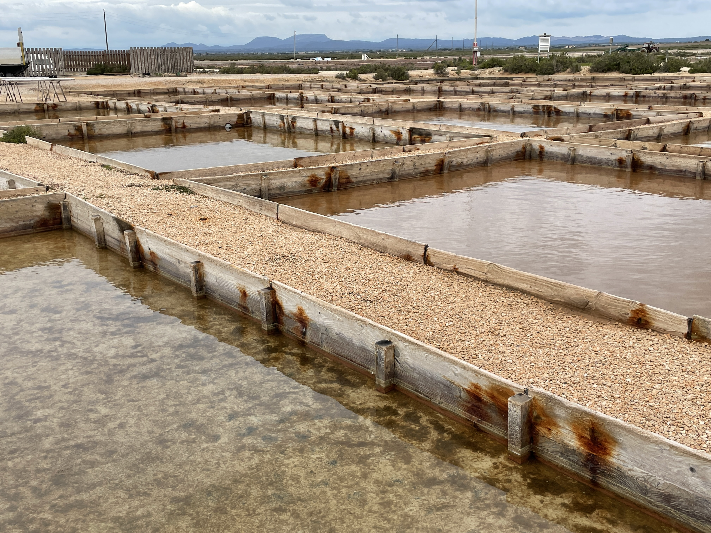

How can we integrate regenerative design practices into our ecosystems? Travelling through the island to observe and learn from the natural environment. In this week we visited some amazing places within Mallorca and analyzed each of us how can we apply our design practice into a beneficial action in context. While we explored the land I reflected on what human traces are left behind. I realised that there was so much evidence of a human activity wherever you looked. It's as if people never actually left. Who knows how long have these pieces been there and who knows where they come from. The only thing we know is that they're still there. Nature wraps around them, plays with these objects and grows around it.
While tracing the plastics around the cala we came across these curious balls of something similar to hair. We researched a bit into them and realised they are neptune balls which are made of the posidonia algae that is washed up to the shore and with the combination of salt water and air they manage to wrap around the ball and with this expulse from the sea whatever extra things it finds on the way. It seems to me as a natural way of cleaning itself, wrapping around the microplastics we left on the sea and returning them back to us. When researching about this particular species of algae we found out they have 15 times more capacity of CO2 absorbtion than other types of algae. So not only do they clean the oceans by taking trash or dead species to the shores with them but they also help sequester CO2.

Thomas had brought with him a 3D scanner which we used to scan the pieces we collected from our foraging in the hike to the calas. We found incredible things like bones, a horn, a starfish, jellyfish and a lot of microplastics in my case. We played a bit with the scanner to see if we were able to create a 3D model of the piece with texture. We scanned the poseidonia ball and this was the result.
We also visited the Salinas d'es trenc. They gave us a tour around the property and showed us all the amount of work that has to go behind the production of the salt. Most of this production requieres a lot of time due to the natural process of salination. Flor de sal is the one that takes more time because it crystalizes and creates flakes in the surface of the water which have to be removed almost immediately. This is demanding a lot of working hours for the people working at the salineras and under the sun. This made me reflect on the producst we consume and all the hard labor that goes behind the scenes. Also on the prices of things. It is true that we tend to believe a price is fair in comparison with other product we think is similar but it doesn't necessarily means it is done the same way. The people of the salineras have been working in this for quite some time and have managed to adapt to the natural processes and just extract some of the outputs of this natural systems. They managed to respect the land and collaborate with it in order to obtain the salt. It is beautiful to see a lot of different species hanging out around the salineras just as another natural habitat.
On another field trip we visited Can Bustán which is managed by Samuel and his wife. They own this permaculture site and work the land to grow different types of food and create sustainable practices. He showed us around and talked about how he applies different techniques around the place. It is impressive how only two people can manage to take care of such a big piece of land but it makes sense when the nature does most of the job on its own. With the new food systems we've gotten used to working the land so much that we're over exploiting them but nature knows how to grow on its own but at its own rythm. Permaculture is a way of respecting the times of growth of nature and aiding its systems to grow in an efficient but natural way. With all that space he manages to test different prototypes of low tech alternatives to common solutions. After touring the place we ate lunch prepared with the vegetables and fruits grown there. The meal was delicious and even more enjoyable after knowing all the work and time it takes to eat this meal.
The last day we went for a botanical expedition with Karen, a local girl who taught us the properties of some plants along our morning walk. She has always been connected to nature and throughout her life she found comfort in it and started learning how it can help us in our everyday lives. It was very pleasant to walk around and take a time to admire the plants around us. So many species that not only are they beautiful but have so many intriguing properties that we ignore. We can find so many answers in nature yet we are still so foreign to it. Nature is so abundant in many ways, giving without expecting anything back from us yet we still manage to abuse it and exploit our natural resources. If we learn how to make use of nature around us we can obtain a lot of benefits and live in balance. It is also true that the more time you spend around nature the more familiar you get with it, making it less intimidating. You also learn to understand it better.
After the botanical expedition we went to a workshop to work with llata. A leaf that comes from garballo which is a palm tree in Mallorca. This palm benefits from the leaves been taken out because in this way it reduces the weight causing them to keep growing. They grow in very peculiar places close to the beach but not so close to the water. They taught us the weaving technique that the Madronas do to create their unique designs. This is another example of hard work that is often undervalued by the consumers. A lot of tourists come to the island to buy souvenirs and end up buying bad quality products because of the cheap price which makes their hard work be left unappreciated. This practice is being lost because people from the island no longer want to learn it. It doesn't provide as much income as a job in the tourist industry might give them. So the madronas are the few people who keep teaching this technique and keeping it alive. There is so many things we don't know that we're influencing by our everyday decisions when we travel. There is a huge gap in between understanding the origin of things and giving value to them. We are use to consuming fast and to the industrialized era that we think things are easily done and undone but that's not the reality of it all.

After reflecting on all of this information from the week I came to realise how disconnected from everything we are. We live in the everyday routine, in the rush of things that we never bother to think about anything around us. It seems like paying attention is expensive right now. There are such few things we can focus on because there are so many others around us trying to steal this attention. We need to snap out of this bubble in order to find that our surroundings are full of other things we never noticed. There's so much nature around us but it seems like it's always constrained, caged in the spaces we designated for them as if nature could be contained. These travels, visits and experiences help us broaden our perspectives and snap out of the routine which has us so stressed out that we can't enjoy what's around us. We have to keep in mind that everywhere we go we leave a footprint. It's up to us to decide if that footprint will be beneficial or harmful and what story is it going to tell after I leave.
I created a presentation with the compilation of the pictures I took of the microplastics found in the foragings done in Mallorca. I was very intrigued by the pops of color I was constantly finding everywhere I walked. It made me wonder about the story of this things, where do they come from and how did they end up there. This also got me thinking about the many things we do on a daily basis which we would never guess would end up where they actually do. Even when we try to be a good visitor and take our trash with us maybe the trash that ended up there came from back home. It is related more towards a change of daily habits where we can actually create a beneficial impact for the environment. A way in which we can reduce our human traces and create a positive impact.
HUMAN TRACES